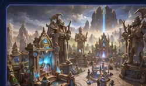

◈
Состояние матча
…
……
Игрок…
Активный прогноз…
Последний результат…
Состояние HotS, подключения Twitch и автоматических прогнозов.

…
replay.server.battlelobbyНажми на матч, чтобы увидеть данные игры и игроков.
Все настройки сохраняются в профиле Windows. Файлы игры не изменяются.
…
Только локальные события и результаты API без секретных токенов.
Интерфейс и сообщения приложения переключаются сразу.
Введи точный ник, под которым играешь — он должен совпадать с именем в реплеях. Если ник не уникален, позже укажи Toon Handle в настройках.
Ожидаемый результат: твой ник и «Победа» или «Поражение». Если реплеев нет — сыграй одну игру и повтори.
В Twitch Developer Console создай приложение типа «Public», скопируй Client ID (секрет не нужен) и вставь сюда.
Ожидаемый результат: появится код, ты подтвердишь доступ на странице Twitch, и статус станет «Twitch подключён».
Во время игры приложение следит за файлами HotS, создаёт Prediction «Победа в HotS?» и завершает его по результату матча. По умолчанию включён режим симуляции — реальные баллы зрителей не затрагиваются.
Длительность приёма ставок и тексты Prediction настраиваются в «Настройках» (1–30 минут).
Всё можно изменить позже в «Настройках». Реальные Predictions включаются там же и только после проверки парсера на своих реплеях.